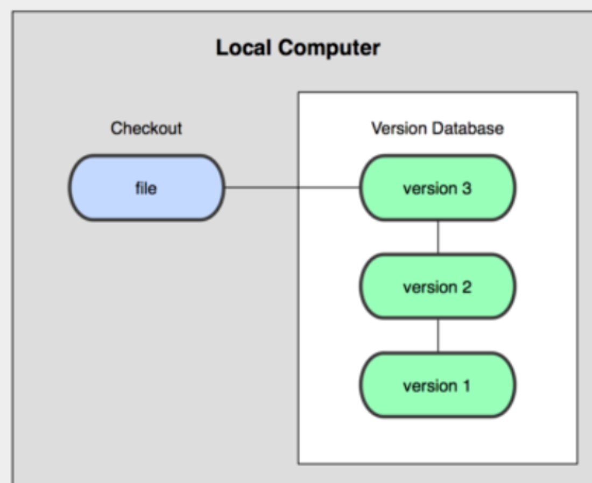
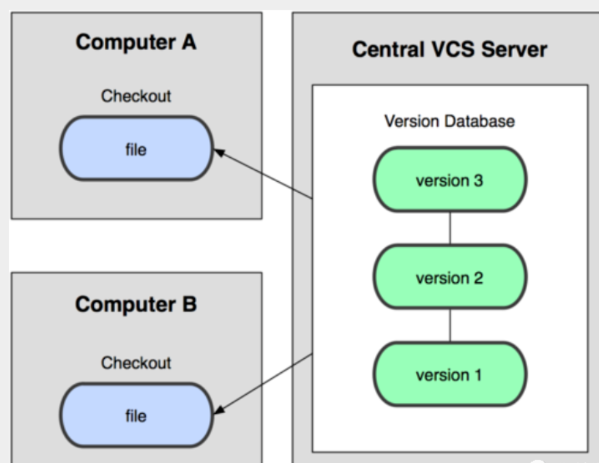
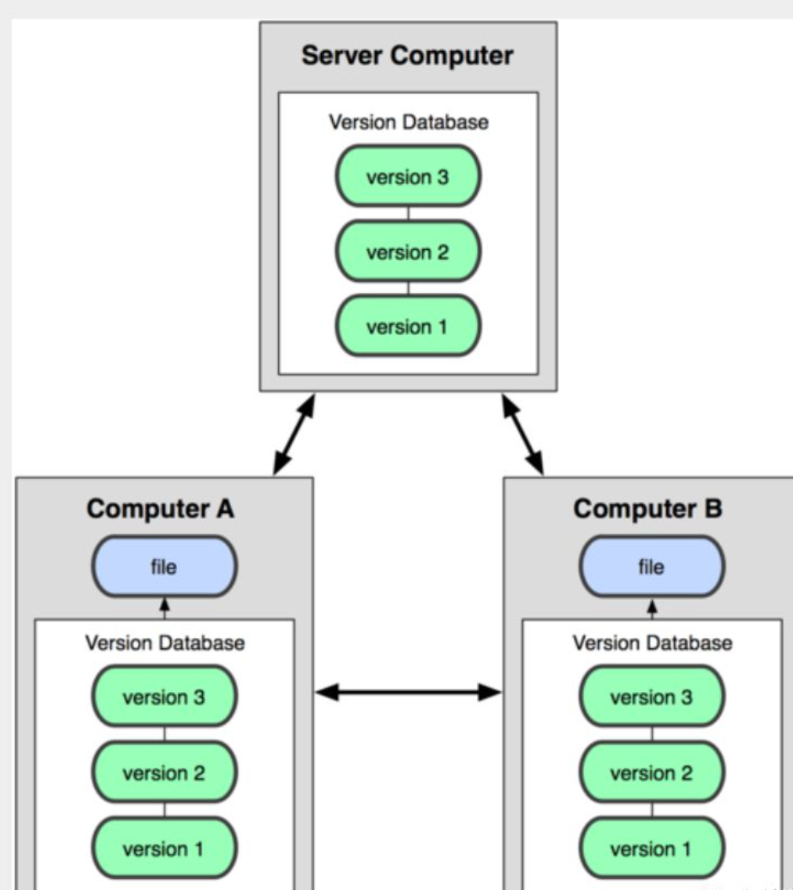
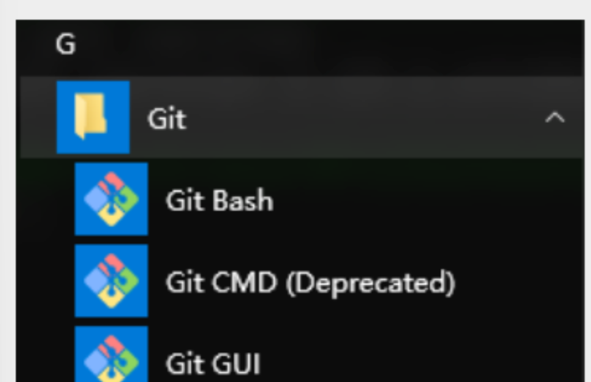
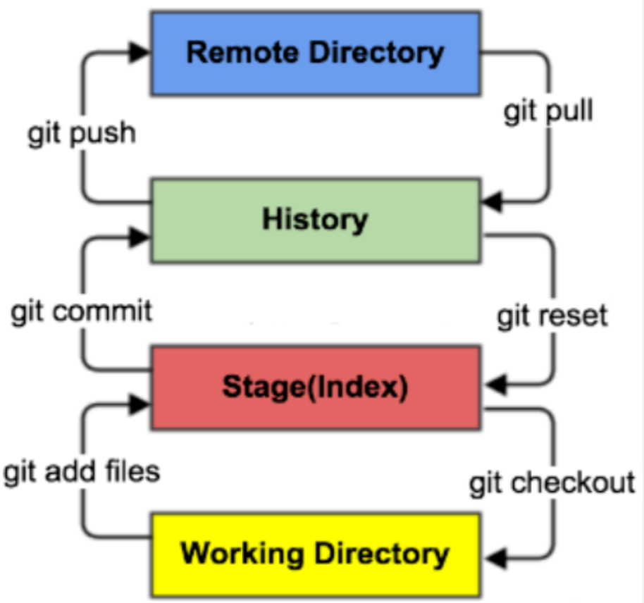
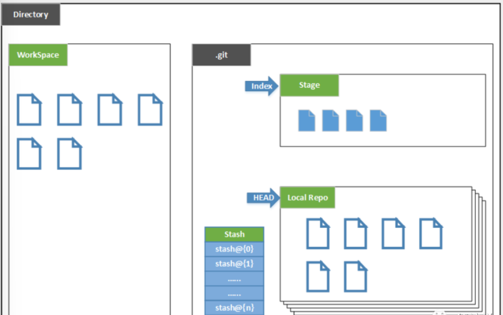
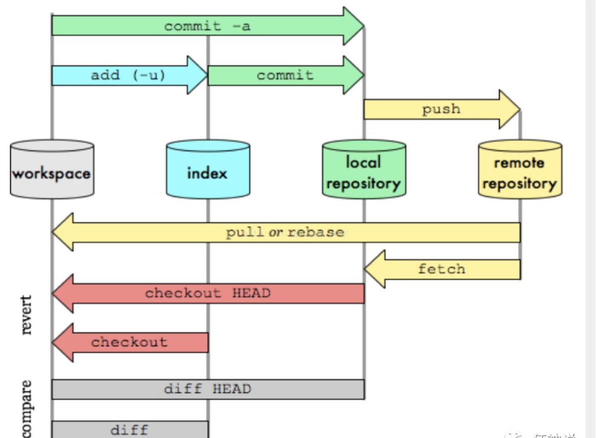
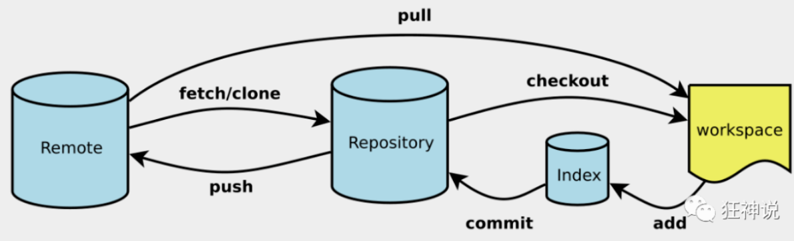
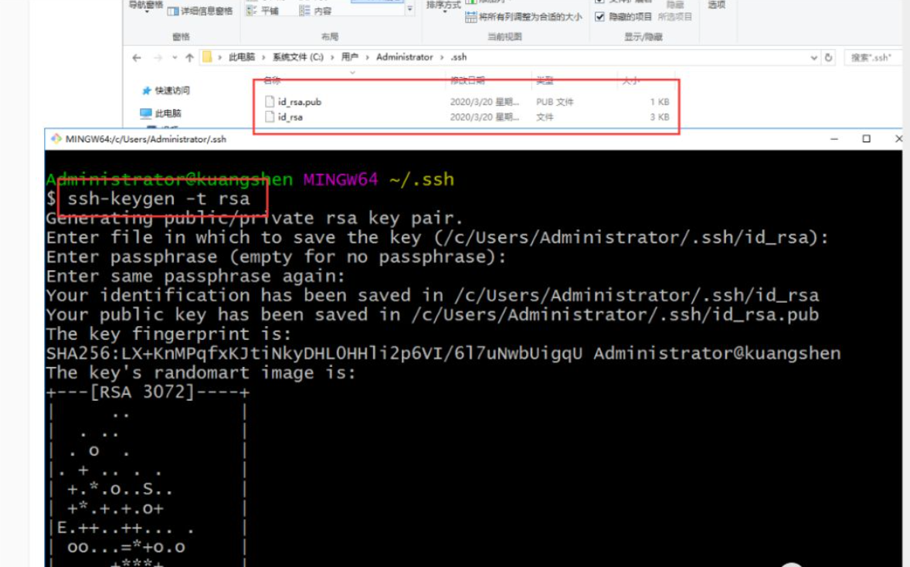

# 版本控制
# 什么是版本控制
版本控制（Revision control）是一种在开发的过程中用于管理我们对文件、目录或工程等内容的修改历史，方便查看更改历史记录，备份以便恢复以前的版本的软件工程技术。
- 实现跨区域多人协同开发
- 追踪和记载一个或者多个文件的历史记录
- 组织和保护你的源代码和文档
- 统计工作量
- 并行开发、提高开发效率
- 跟踪记录整个软件的开发过程
- 减轻开发人员的负担，节省时间，同时降低人为错误
简单说就是用于管理多人协同开发项目的技术。
没有进行版本控制或者版本控制本身缺乏正确的流程管理，在软件开发过程中将会引入很多问题，如软件代码的一致性、软件内容的冗余、软件过程的事物性、软件开发过程中的并发性、软件源代码的安全性，以及软件的整合等问题。
# 常见的版本控制工具
主流的版本控制器有如下这些：
- Git
- SVN（Subversion）
- CVS（Concurrent Versions System）
- VSS（Micorosoft Visual SourceSafe）
- TFS（Team Foundation Server）
- Visual Studio Online
现在影响力最大且使用最广泛的是 Git 与 SVN
# 版本控制分类
# 本地版本控制
记录文件每次的更新，可以对每个版本做一个快照，或是记录补丁文件，适合个人用，如 RCS。

# 集中版本控制 SVN
所有的版本数据都保存在服务器上，协同开发者从服务器上同步更新或上传自己的修改

所有的版本数据都存在服务器上，用户的本地只有自己以前所同步的版本，如果不连网的话，用户就看不到历史版本，也无法切换版本验证问题，或在不同分支工作。而且，所有数据都保存在单一的服务器上，有很大的风险这个服务器会损坏，这样就会丢失所有的数据，当然可以定期备份。
# 分布式版本控制 Git
所有版本信息仓库全部同步到本地的每个用户，这样就可以在本地查看所有版本历史，可以离线在本地提交，只需在连网时 push 到相应的服务器或其他用户那里。由于每个用户那里保存的都是所有的版本数据，只要有一个用户的设备没有问题就可以恢复所有的数据，但这增加了本地存储空间的占用。

# Git 与 SVN 的主要区别
SVN 是集中式版本控制系统，版本库是集中放在中央服务器的，而工作的时候，用的都是自己的电脑，所以首先要从中央服务器得到最新的版本，然后工作，完成工作后，需要把自己做完的活推送到中央服务器。集中式版本控制系统是必须联网才能工作，对网络带宽要求较高。
# Git 的历史
Git 是目前世界上最先进的分布式版本控制系统。
Git 是免费、开源的，最初 Git 是为辅助 Linux 内核开发的，来替代 BitKeeper！
# Git 环境配置
# 软件下载
打开 [git 官网] https://git-scm.com/，下载 git 对应操作系统的版本。
所有东西下载慢的话就可以去找镜像！
官网下载太慢，我们可以使用淘宝镜像下载：http://npm.taobao.org/mirrors/git-for-windows/
安装：无脑下一步即可！安装完毕就可以使用了！
# 启动 Git
安装成功后在开始菜单中会有 Git 项，菜单下有 3 个程序：任意文件夹下右键也可以看到对应的程序！

**Git Bash：**Unix 与 Linux 风格的命令行，使用最多，推荐最多
**Git CMD：**Windows 风格的命令行
Git GUI：图形界面的 Git，不建议初学者使用，尽量先熟悉常用命令
# 常用的 Linux 命令
平时一定要多使用这些基础的命令！
1）cd : 改变目录。
2）cd . . 回退到上一个目录，直接cd进入默认目录
3）pwd : 显示当前所在的目录路径。
4）ls(ll): 都是列出当前目录中的所有文件，只不过ll(两个ll)列出的内容更为详细。
5）touch : 新建一个文件 如 touch index.js 就会在当前目录下新建一个index.js文件。
6）m: 删除一个文件, rm index.js 就会把index.js文件删除。
7）mkdir: 新建一个目录,就是新建一个文件夹。
8）rm -r : 删除一个文件夹, rm -r src 删除src目录
rm -rf / 切勿在Linux中尝试！删除电脑中全部文件！
9）mv 移动文件, mv index.html src index.html 是我们要移动的文件, src 是目标文件 夹,当然, 这样写,必须保证文件和目标文件夹在同一目录下。
10）reset 重新初始化终端/清屏。
11）clear 清屏。
12）history 查看命令历史。
13）help 帮助。
14）exit 退出。
15）#表示注释
# Git 配置
所有的配置文件，其实都保存在本地！
查看配置 git config -l
查看不同级别的配置文件：
#查看系统configgit config --system --list
#查看当前用户（global）配置git config --global --list
Git 相关的配置文件：
1）、Git\etc\gitconfig ：Git 安装目录下的 gitconfig --system 系统级
2）、C:\Users\ji\ .gitconfig 只适用于当前登录用户的配置 --global 全局
# 设置用户名与邮箱（用户标识，必要）
当你安装 Git 后首先要做的事情是设置你的用户名称和 e-mail 地址。这是非常重要的，因为每次 Git 提交都会使用该信息。它被永远的嵌入到了你的提交中：
git config --global user.name "jihaipeng666" #名称
git config --global user.email 3204568531@qq.com #邮箱
# Git 基本理论（重要）
# 三个区域
Git 本地有三个工作区域：工作目录（Working Directory）、暂存区 (Stage/Index)、资源库 (Repository 或 Git Directory)。如果在加上远程的 git 仓库 (Remote Directory) 就可以分为四个工作区域。

- Workspace：工作区，就是你平时存放项目代码的地方
- Index / Stage：暂存区，用于临时存放你的改动，事实上它只是一个文件，保存即将提交到文件列表信息
- Repository：仓库区（或本地仓库），就是安全存放数据的位置，这里面有你提交到所有版本的数据。其中 HEAD 指向最新放入仓库的版本
- Remote：远程仓库，托管代码的服务器，可以简单的认为是你项目组中的一台电脑用于远程数据交换
本地的三个区域确切的说应该是 git 仓库中 HEAD 指向的版本：

- Directory：使用 Git 管理的一个目录，也就是一个仓库，包含我们的工作空间和 Git 的管理空间。
- WorkSpace：需要通过 Git 进行版本控制的目录和文件，这些目录和文件组成了工作空间。
- .git：存放 Git 管理信息的目录，初始化仓库的时候自动创建。
- Index/Stage：暂存区，或者叫待提交更新区，在提交进入 repo 之前，我们可以把所有的更新放在暂存区。
- Local Repo：本地仓库，一个存放在本地的版本库；HEAD 会只是当前的开发分支（branch）。
- Stash：隐藏，是一个工作状态保存栈，用于保存 / 恢复 WorkSpace 中的临时状态。
# 工作流程
git 的工作流程一般是这样的：
１、在工作目录中添加、修改文件；
２、将需要进行版本管理的文件放入暂存区域；
３、将暂存区域的文件提交到 git 仓库。
因此，git 管理的文件有三种状态：已修改（modified）, 已暂存（staged）, 已提交 (committed)

# Git 项目搭建
# 创建工作目录与常用指令
工作目录（WorkSpace) 一般就是你希望 Git 帮助你管理的文件夹，可以是你项目的目录，也可以是一个空目录，建议不要有中文。
日常使用只要记住下图 6 个命令：

# 本地仓库搭建
创建本地仓库的方法有两种：一种是创建全新的仓库，另一种是克隆远程仓库。
1、创建全新的仓库，需要用 GIT 管理的项目的根目录执行：
# 在当前目录新建一个Git代码库$ git init
2、执行后可以看到，仅仅在项目目录多出了一个.git 目录，关于版本等的所有信息都在这个目录里面。
# 克隆远程仓库
另一种方式是克隆远程目录，由于是将远程服务器上的仓库完全镜像一份至本地！
# 克隆一个项目和它的整个代码历史(版本信息)$ git clone [url] # https://gitee.com/kuangstudy/openclass.git
# Git 文件操作
# 文件的四种状态
版本控制就是对文件的版本控制，要对文件进行修改、提交等操作，首先要知道文件当前在什么状态，不然可能会提交了现在还不想提交的文件，或者要提交的文件没提交上。
- Untracked: 未跟踪，此文件在文件夹中，但并没有加入到 git 库，不参与版本控制。通过 git add 状态变为 Staged.
- Unmodify: 文件已经入库，未修改，即版本库中的文件快照内容与文件夹中完全一致。这种类型的文件有两种去处，如果它被修改，而变为 Modified. 如果使用 git rm 移出版本库，则成为 Untracked 文件
- Modified: 文件已修改，仅仅是修改，并没有进行其他的操作。这个文件也有两个去处，通过 git add 可进入暂存 staged 状态，使用 git checkout 则丢弃修改过，返回到 unmodify 状态，这个 git checkout 即从库中取出文件，覆盖当前修改！
- Staged: 暂存状态。执行 git commit 则将修改同步到库中，这时库中的文件和本地文件又变为一致，文件为 Unmodify 状态。执行 git reset HEAD filename 取消暂存，文件状态为 Modified
# 查看文件状态
上面说文件有 4 种状态，通过如下命令可以查看到文件的状态：
#查看指定文件状态git status [filename]
#查看所有文件状态git status
# git add . 添加所有文件到暂存区
# git commit -m "消息内容" 提交暂存区中的内容到本地仓库 -m 提交信息
# 忽略文件
有些时候我们不想把某些文件纳入版本控制中，比如数据库文件，临时文件，设计文件等
在主目录下建立 ".gitignore" 文件，此文件有如下规则：
- 忽略文件中的空行或以井号（#）开始的行将会被忽略。
- 可以使用 Linux 通配符。例如：星号（*）代表任意多个字符，问号（？）代表一个字符，方括号（[abc]）代表可选字符范围，大括号（{string1,string2,...}）代表可选的字符串等。
- 如果名称的最前面有一个感叹号（!），表示例外规则，将不被忽略。
- 如果名称的最前面是一个路径分隔符（/），表示要忽略的文件在此目录下，而子目录中的文件不忽略。
- 如果名称的最后面是一个路径分隔符（/），表示要忽略的是此目录下该名称的子目录，而非文件（默认文件或目录都忽略）。
#为注释
*.txt #忽略所有 .txt结尾的文件,这样的话上传就不会被选中！
!lib.txt #但lib.txt除外
/temp #仅忽略项目根目录下的TODO文件,不包括其它目录
tempbuild/ #忽略build/目录下的所有文件
doc/*.txt #会忽略 doc/notes.txt 但不包括 doc/server/arch.txt
# 使用码云
github 是有墙的，比较慢，在国内的话，我们一般使用 gitee ，公司中有时候会搭建自己的 gitlab 服务器
1、注册登录码云，完善个人信息
2、设置本机绑定 SSH 公钥，实现免密码登录！（免密码登录，这一步挺重要的，码云是远程仓库，我们是平时工作在本地仓库！)
# 进入 C:\Users\Administrator\.ssh 目录
# 生成公钥
ssh-keygen

3、将公钥信息 public key 添加到码云账户中即可！
4、使用码云创建一个自己的仓库！
# IDEA 中集成 Git
# GIT 分支
# git 分支中常用指令
# 列出所有本地分支
git branch
# 列出所有远程分支
git branch -r
# 新建一个分支，但依然停留在当前分支
git branch [branch-name]
# 新建一个分支，并切换到该分支
git checkout -b [branch]
# 合并指定分支到当前分支
$ git merge [branch]
# 删除分支
$ git branch -d [branch-name]
# 删除远程分支
$ git push origin --delete [branch-name]
$ git branch -dr [remote/branch]